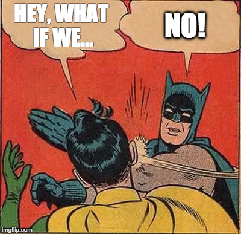

The Secret Life of JavaScript
...And what it means for your sanity
Andy Boughton / @occsci
In the old days...
function myFunction() {
// return 12;
}
...And then things got weird

https://hackernoon.com/how-it-feels-to-learn-javascript-in-2016-d3a717dd577f
WHY?
(A tragegy in two acts)
The Law of Leaky Abstractions

"That is, approximately, the magic of TCP. It is what computer scientists like to call an
abstraction: a simplification of something much more complicated that is going on under
the covers."
Backwards compatibility
...is hard
Your site needs to work for many users
...even if their computers are old
This adds complexity
TODO: Insert browser usage stats slide, as of current date; number years lifetime?
Include mobile stats (do browsers get updated more slowly there?)
Data takes time to transfer
A lot of the time loading a page is spent just waiting
INSERT HPBN style graphic / waterfall diagram
Cover asset concatenation
You pay for bandwidth
Uglification/ minification
Pretending not to write JS
Modules to keep code isolated
TypeScript etc to help you develop
Premade packages handle the edge cases
Package managers & polyfills
Pretending to be cool
Transpilation + asset pipelines (Babel)
Source maps
Help connect the code you wrote to the code that gets run
Delivering to the user
Alternatives for library bundling (eg CDNs)
Tools to manage complexity
Gulp, webpack, yeoman boilerplate, cli tools for frameworks (angular, ember, polymer), etc
A post-mortem
- One function
- x lines of code
- y individual author contributors around the world building these libraries
- Wait, what were you trying to do again?
Further reading
- HPBN for network optimizations
- Compression
- Identifying unused code (new chrome feature)
- Licensing?
- CDNs
- Other layers not covered